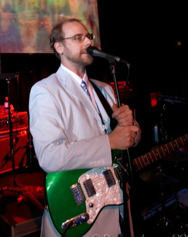

About Me
I've always loved technology. I graduate from SUNY Purchase 2001 with a Bachelor's of Music, and have been producing ever since. My career in IT started in 2003 when I became a tech for Strategic Products and Services. After 10 years there I split off and created my own company Brooklyn VOIP, a telephony tech services company. In 2013 I also started working as an Android developer on the DotMatrix Drum Machine. By 2014 I was ready to teach and I taught kids how to code for a year at Manhattan Youth, an afterschool program at PS 113 in New York City. Last year I created a generative music and sound effects score for the multiplatform Bots n Lasers video game. Along the way I was able to play a bunch of concerts, pictured here is me opening for the Disco Biscuits at the Tweeter Center in Philadelphia. In 2007 I worked with Engineers without Borders for a summer in Rwanda. I have realeased 5 studio albums and 4 soundtracks since 2002.